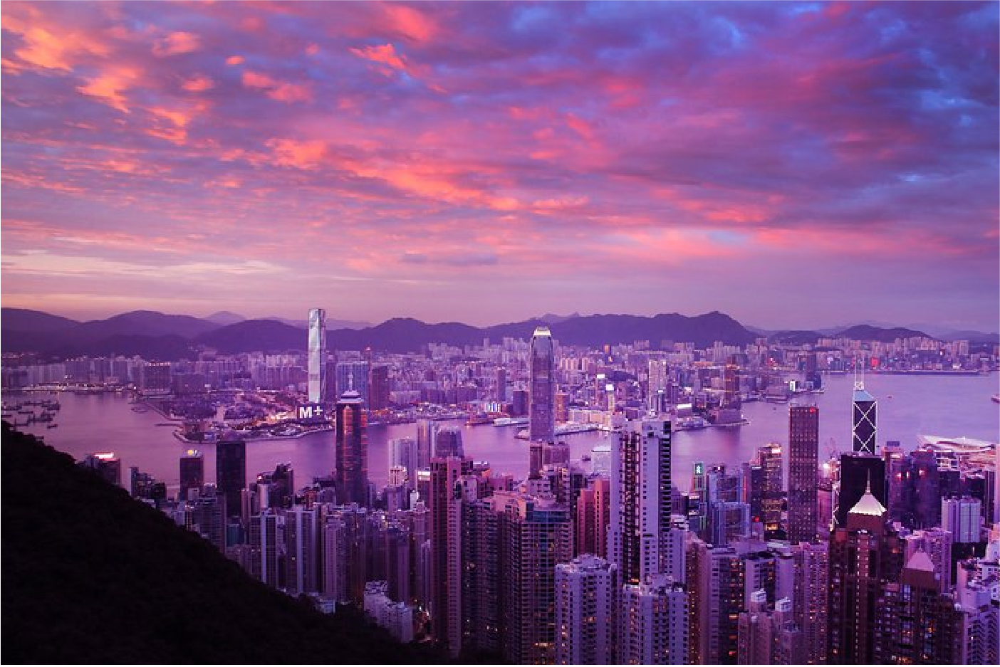
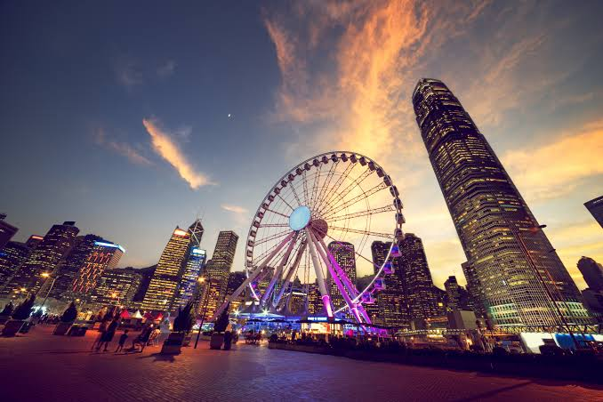
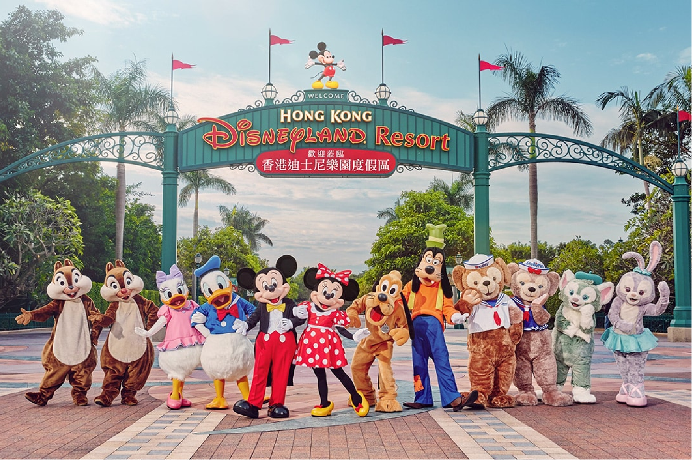

以下是香港一些最受歡迎的景點，無論是遊客還是常客，都能在此找到樂趣。
here are some of Hong Kong's most popular points of interest, fun for both tourists, and regulars
香港擁有眾多地標和景點，由於數量太多無法一一列舉，以下為您介紹其中最受歡迎的 9 個。
Hong Kong has plenty of landmarks and points of interest, there's too many to mention all of them, so here is the 9 most popular

天坛大佛
Tian Tian Buddha
天壇大佛（又稱「大佛」）是一尊巨大的釋迦牟尼佛青銅雕像，坐落於香港大嶼山，毗鄰寶蓮禪寺。
The Tian Tan Buddha, also known as the Big Buddha, is a massive bronze sculpture of Gautama Buddha located on Lantau Island in Hong Kong, next to the Po Lin Monastery.

萬佛寺.
Ten Thousand Buddhas Monastery
萬佛寺位於香港沙田，是一座建於20世紀中期的佛教寺院建築群；該寺以擁有超過12,800尊佛像以及需拾級而上約430級台階而聞名。
The Ten Thousand Buddhas Monastery (Man Fat Tsz) is a mid-20th-century Buddhist temple complex in Sha Tin, Hong Kong, famous for over 12,800 Buddha statues and a climb of roughly 430 steps.

太平山頂
Victoria Peak
在太平山頂，您可以飽覽山下城市的壯麗景色。您可以搭乘自1888年起就開始運營、歷史悠久的“山頂纜車”；乘坐雙層“城巴”15號線，沿途欣賞風景上山；或者沿著“舊山頂道”或“晨運徑”等鋪設好的步道拾級而下。
At the top of Victoria Peak, you get an amazing view of the city below. Ride the historic Peak Tram that's been operating since 1888, take double-decker Citybus Route 15 for a scenic climb, or walk down along paved trails like Old Peak Road or the Morning Trail.

香港摩天輪
The Observation Wheel
這座觀景摩天輪高60公尺（197英尺），坐落於香港中環海濱，在此可飽覽維多利亞港及城市天際線的全景。摩天輪設有42個配備空調的觀景廂，每個觀景廂最多可容納8名乘客；其中包括一個配有真皮座椅、底部採用透明玻璃設計的貴賓觀景廂，最多可容納5人。它位於民光街33號，緊鄰友邦活力公園（AIA Vitality Park）；該公園內設有開闊的草坪、經典旋轉木馬、活動場地以及各類健康主題活動。
The Observation Wheel is a 60-metre (197-foot) tall Ferris wheel on the Central Harbourfront in Hong Kong that offers panoramic views of Victoria Harbour and the city skyline. It features 42 air-conditioned gondolas, each seating up to 8 passengers. This includes one glass-bottomed VIP gondola with leather seats that seats up to 5 people. It is situated at 33 Man Kwong Street alongside AIA Vitality Park, featuring open lawn space, a classic carousel, event areas, and wellness activities.

宝莲禅寺
Po Lin Monastery
寶蓮禪寺是位於香港大嶼山昂坪高原上的一座重要禪宗寺院。該寺建於1906年，以其色彩鮮豔的傳統建築、素食餐飲，以及毗鄰34米高的天壇大佛而聞名。
Po Lin Monastery is a major Chan (Zen) Buddhist monastery on the Ngong Ping Plateau of Lantau Island, Hong Kong. Founded in 1906, it is known for its colorful traditional architecture, vegetarian dining, and proximity to the 34-meter Tian Tan Big Buddha.

维多利亚港
Victoria Harbour
維多利亞港是一座水深且遮蔽的天然良港，將南側的香港島與北側的九龍半島隔開。港口面積約 41.11 平方公里（15.87 平方英里），最大水深達 43 公尺（141 英尺），是香港的地理與經濟核心，也擁有世界上最著名的城市天際線之一。。
Victoria Harbour is a deep, sheltered natural harbour separating Hong Kong Island to the south from the Kowloon Peninsula to the north. Covering about 41.11 sq km (15.87 sq mi) with a maximum depth of 43 m (141 ft), it is the geographic and economic heart of Hong Kong and home to one of the world's most famous urban skylines.

海洋公园.
Ocean Park
香港海洋公園是一座大型遊樂及動物主題樂園，位於香港島黃竹坑。公園佔地 226 英畝（91.5 公頃），於 1977 年 1 月 10 日開幕，集海洋生物展示、野生動物保育和刺激遊樂設施於一體。公園分為「海濱樂園」與「高峰樂園」兩大區域，兩地由觀景纜車及「海洋列車」纜索鐵路相連。
Ocean Park Hong Kong is a major amusement and animal theme park in Wong Chuk Hang on Hong Kong Island. Opened on January 10, 1977, the 226-acre (91.5-hectare) park combines marine exhibits, wildlife conservation, and thrill rides across two main zones—the Waterfront and the Summit—linked by a scenic cable car and the Ocean Express funicular

香港迪士尼乐园
DisneyLand Hong Kong
香港迪士尼樂園是位於香港大嶼山竹篙灣的主題樂園，於2005年9月12日開幕。樂園由香港政府與華特迪士尼公司合資經營，以其緊湊的佈局、背山面海的自然背景，以及獨特的主題園區和遊樂設施而聞名。
Hong Kong Disneyland is a theme park located in Penny's Bay on Lantau Island, Hong Kong, which opened on September 12, 2005. Operated by a joint venture between the Hong Kong Government and The Walt Disney Company, it is known for its compact layout, mountain-and-ocean backdrop, and exclusive lands and attractions.

天星小轮
The Star ferry
天星小輪是香港歷史悠久的客運渡輪服務，也是旅遊景點，往返於九龍與香港島之間，橫越維多利亞港。
The Star Ferry is a historic passenger ferry service and tourist attraction in Hong Kong that crosses Victoria Harbour between Kowloon and Hong Kong Island.